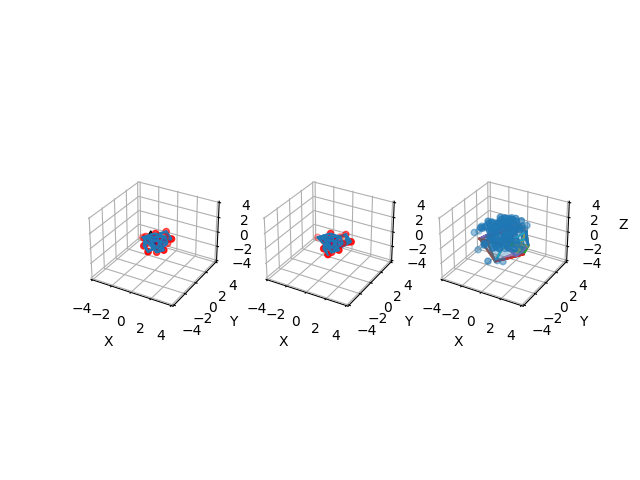

Note
Click here to download the full example code
Collision resolution with EPA after GJK¶
Out:
[ 0.29933258 0.328456 -0.68723309]
[-0.38728736 0.17957648 -0.17620356]
print(__doc__)
import numpy as np
import matplotlib.pyplot as plt
import pytransform3d.plot_utils as ppu
from distance3d import random, plotting, gjk, epa
random_state = np.random.RandomState(0)
vertices, faces = random.randn_convex(random_state, center_scale=0.0)
vertices2, faces2 = random.randn_convex(random_state, center_scale=0.2)
dist, p1, p2, simplex = gjk.gjk_with_simplex(gjk.Convex(vertices), gjk.Convex(vertices2))
mtv, minkowski_faces, success = epa.epa(simplex, gjk.Convex(vertices), gjk.Convex(vertices2))
assert success
assert all(p1 == p2)
print(p1)
print(mtv)
ax = ppu.make_3d_axis(ax_s=4, pos=131)
plotting.plot_convex(ax, vertices, faces, alpha=0.1)
plotting.plot_convex(ax, vertices2, faces2, alpha=0.1, color="r")
ax.scatter(p1[0], p1[1], p1[2])
ppu.plot_vector(ax, p1, mtv)
ax = ppu.make_3d_axis(ax_s=4, pos=132)
plotting.plot_convex(ax, vertices, faces, alpha=0.1)
plotting.plot_convex(ax, vertices2 + mtv[np.newaxis], faces2 + mtv[np.newaxis, np.newaxis], alpha=0.1, color="g")
plotting.plot_segment(ax, p1, p2 + mtv)
ax = ppu.make_3d_axis(ax_s=4, pos=133)
minkowski_points = gjk.minkowski_sum(vertices, -vertices2)
ax.scatter(minkowski_points[:, 0], minkowski_points[:, 1], minkowski_points[:, 2])
plotting.plot_tetrahedron(ax, simplex)
for f in minkowski_faces:
plotting.plot_triangle(ax, f[:3])
ax.scatter(0, 0, 0)
ax.scatter(mtv[0], mtv[1], mtv[2])
plt.show()
Total running time of the script: ( 0 minutes 0.223 seconds)